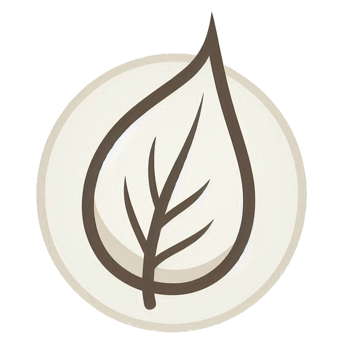

The Leafy Game Engine
A 3D and 2D code-focussed Game Engine designed to be a great starting point for building games in Rust using little external dependecies. I am using this project as a giant learning experience in the game development world. It is not in a stable state and is still being worked on. More info on this page.
A 3D and 2D code-focussed Game Engine designed to be a great starting point for building games in Rust using little external dependecies. I am using this project as a giant learning experience in the game development world. It is not in a stable state and is still being worked on. More info on this page.